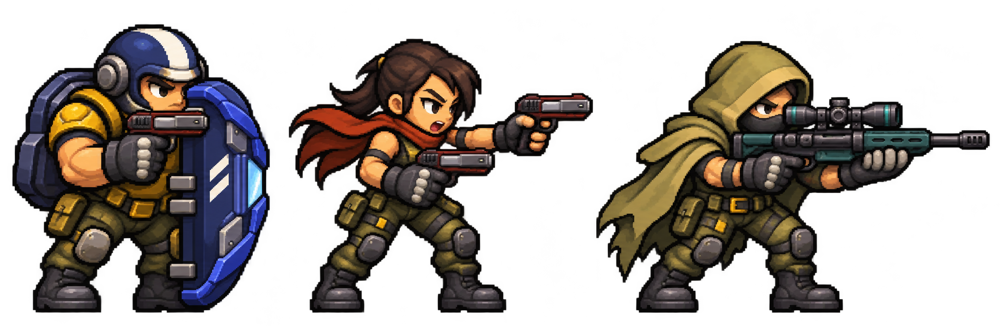

<!doctype html>
<html lang="ko">
<meta charset="utf-8">
<meta name="viewport" content="width=device-width,initial-scale=1">
<title>Drop Zone Squad · 선두 교대</title>
<link rel="stylesheet" href="review.css">
<main>
  <header><b><i></i> DROP ZONE SQUAD</b><span>COMBAT ART &nbsp;/&nbsp; 을지로</span></header>
  <section class="intro"><div><p>전투 에셋 시안</p><h1>선두 교대</h1></div></section>
  <nav aria-label="선두 선택">
    <button data-role="0" aria-pressed="true"><small>BULK</small>벌크 <em>방어</em></button>
    <button data-role="1" aria-pressed="false"><small>RAVEN</small>레이븐 <em>돌격</em></button>
    <button data-role="2" aria-pressed="false"><small>LYNX</small>링스 <em>저격</em></button>
  </nav>
  <section class="range" aria-label="선두와 후열 두 명의 사격 애니메이션">
    <canvas id="stage" width="520" height="144" aria-label="을지로 거리에서 분대가 사격하는 장면"></canvas>
    <div class="controls"><strong id="loadout">벌크 · 방패 전개</strong><div><button id="audio" aria-pressed="false">소리 켜기</button><button id="play">일시정지</button></div></div>
  </section>
  <p class="note" id="note" aria-live="polite">파란 방패로 전면을 막고, 틈을 두고 한 발씩 반격합니다.</p>
  <section class="details">
    <article><h2>선두 장비</h2><canvas id="gear" width="260" height="108" aria-label="선두 장비 확대"></canvas></article>
    <article><h2>사격 동작</h2><canvas id="strip" width="320" height="108" aria-label="준비, 발사, 복귀 스프라이트"></canvas><div class="captions"><span>준비</span><span>발사</span><span>복귀</span></div></article>
  </section>
</main>
<script src="atlas-data.js"></script>
<script src="review.js"></script>
</html>
